Jettro Coenradie thu 3 dec · 19:00 · de makersfabriek, zwolle
Jettro Coenradie
Principal Consultant Search and AI expert
Software architect
Over a decade of making search engines find the right thing
Machine learning and NLP, then AI agents
Curious about what happens beyond the demo
The only thing that grows by sharing is knowledge.
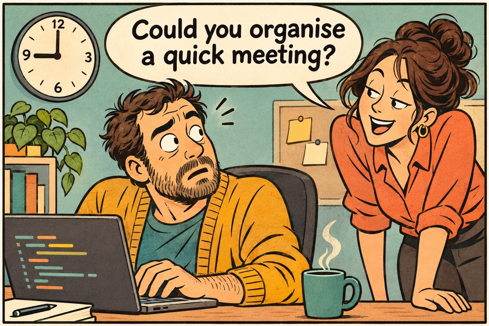
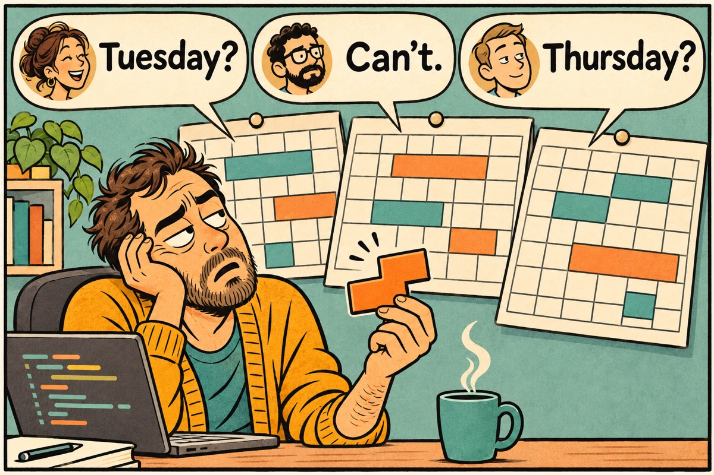
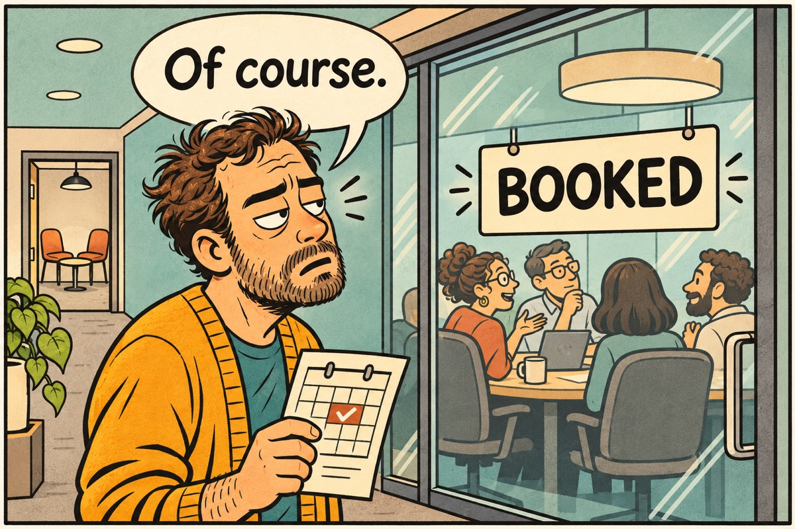
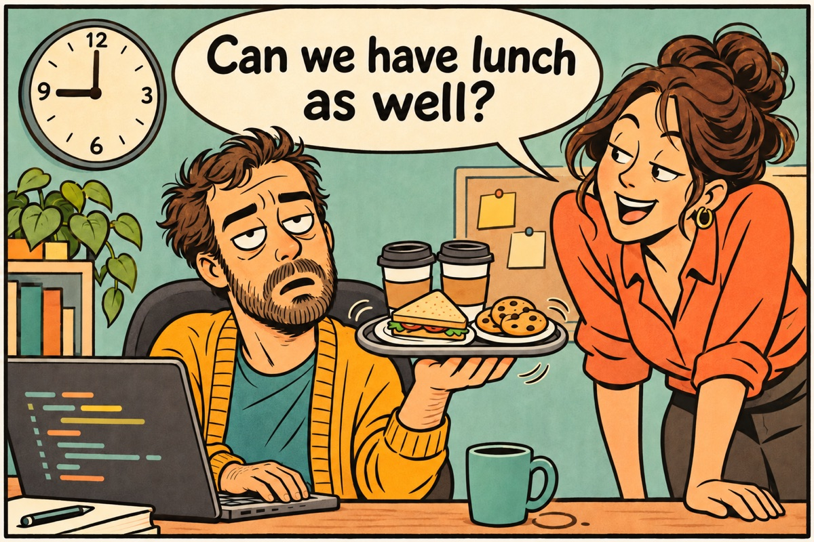
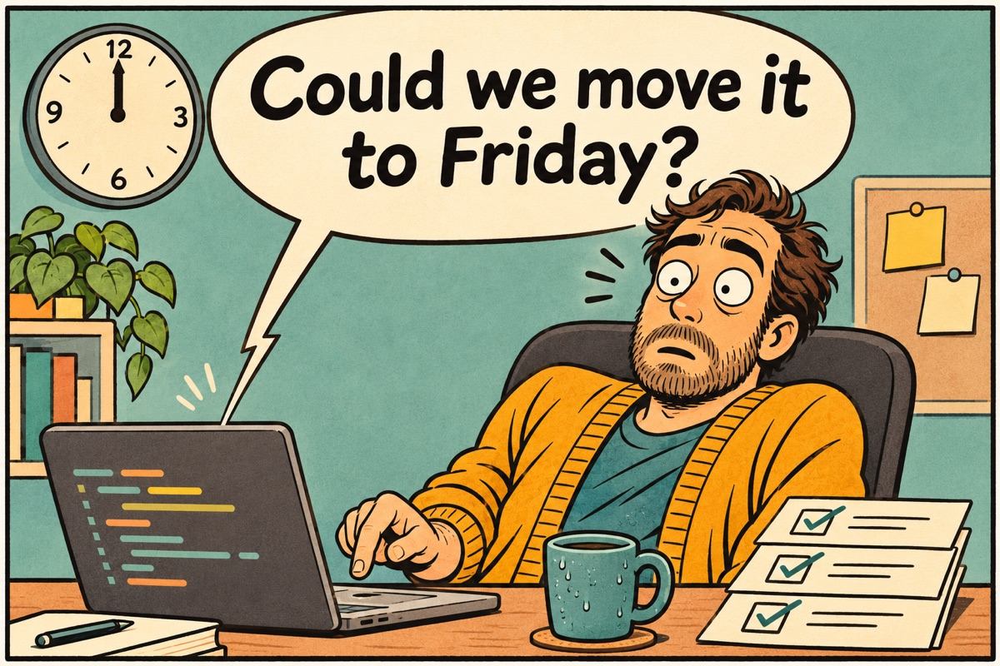
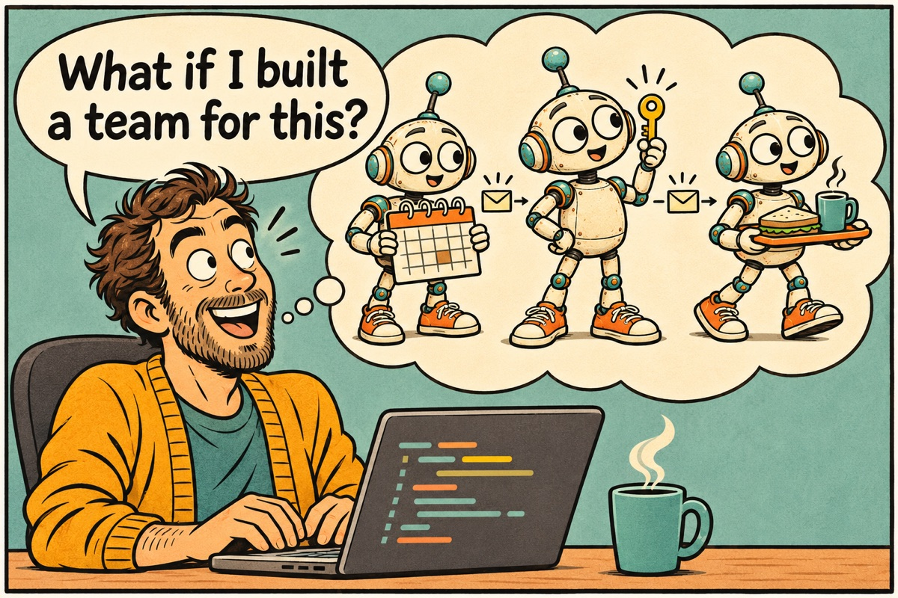
What is an agent?
anthropic.com
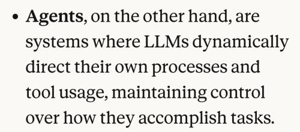
Anthropic · Building effective agents · 2024
openai.com
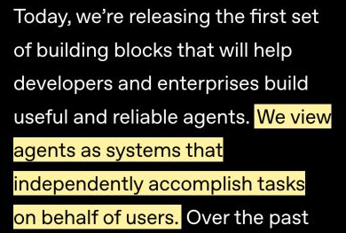
OpenAI · New tools for building agents · 2025
cloud.google.com
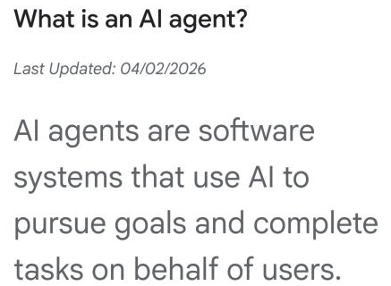
Google Cloud · What is an AI agent? · 2026
ibm.com
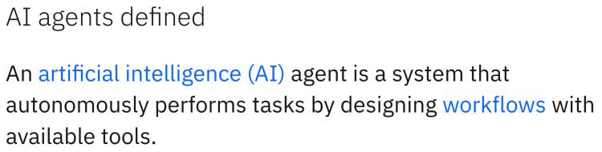
IBM · What are AI agents?
An LLM agent runs tools in a loop to achieve a goal.
simonwillison.net
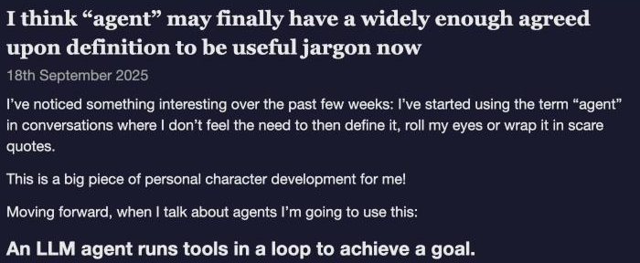
Simon Willison, September 2025 - “agent” finally has a widely enough agreed definition
1 Just call an LLM
the LLM
from pydantic_ai import Agent
agent = Agent("openai:gpt-6-luna")
result = agent.run_sync("What is the date of next Friday?")
print(result.output)
Five lines - and it does not know what day it is.
2 Give it context
context
from datetime import date
from pydantic_ai import Agent
agent = Agent("openai:gpt-6-luna", instructions="You plan meetings. Answer in one sentence.")
@agent.instructions
def today() -> str:
return f"Today is {date.today():%A %d %B %Y}."
result = agent.run_sync("What is the date of next Friday?")
print(result.output)
The same question. Now it can answer.
3 Simulate memory
memory
from datetime import date
from pydantic_ai import Agent
agent = Agent("openai:gpt-6-luna", instructions="You plan meetings. Answer in one sentence.")
@agent.instructions
def today() -> str:
return f"Today is {date.today():%A %d %B %Y}."
first = agent.run_sync("My name is Sam, and I need a room for six people next Friday.")
print(first.output)
second = agent.run_sync(
"What was my name, and for how many people?",
message_history=first.all_messages(),
)
print(second.output)
4 Give it a tool
tools
from datetime import date
from pydantic_ai import Agent
agent = Agent("openai:gpt-6-luna", instructions="You plan meetings. Answer in one sentence.")
@agent.instructions
def today() -> str:
return f"Today is {date.today():%A %d %B %Y}."
@agent.tool_plain
def free_rooms(day: date, people: int) -> list[str]:
"""The meeting rooms that are free on a day, for a number of people."""
print(f" > tool: free_rooms({day}, {people})")
return ["Attic (8)", "Greenhouse (6)"] if people <= 6 else ["Attic (8)"]
first = agent.run_sync("My name is Sam, and I need a room for six people next Friday.")
second = agent.run_sync("Which rooms are free?", message_history=first.all_messages())
print(second.output)
Run it
make run-llmjust an LLM
make run-systemcontext: today
make run-memorymemory
make run-toola tool
gpt-6-luna · pydantic-ai
Start with one agent
“Finding the simplest solution possible, and only increasing complexity when needed.”Anthropic · Building effective agents · 2024
“Maximize a single agent’s capabilities first.”OpenAI · A practical guide to building agents · 2025
“Don’t build multi-agents.”Cognition · 2025
Split only for
Context protectionkeep what one agent reads out of the others’ heads
Parallel workmany things at once - thoroughness more than speed
Specializationtoo many tools for one prompt
Anthropic · When to use multi-agent systems · January 2026
And pay for it: 3 to 15 times the tokens.
Five ways to arrange a team
Pipelineone after the other
Anthropic: prompt chaining · Google, Microsoft: sequentialFan-outside by side, then gather
Anthropic: parallelization · Google: parallel · Microsoft: concurrentOrchestratorone in charge - nested, a hierarchy
Anthropic: orchestrator-workers · OpenAI: manager · LangChain: supervisorHandoffpass the conversation on
Anthropic: routing · OpenAI, Microsoft: handoff · Google: transferGroup chateveryone in one conversation
Microsoft: group chat · LangChain: network, swarm
What goes wrong
+81 %on work that can be split up
−39 to −70 %on planning, where every step needs the one before
17× → 4×errors amplified - without, and with, an orchestrator
Google Research · Towards a science of scaling agent systems · January 2026 · 180 configurations
Many may think. One should write.
“multi-agent systems work best today when writes stay single-threaded”Cognition · Multi-agents: what’s actually working · April 2026
Split agents like services
meeting servicepeople · agendas
@Scheduler
location serviceplaces · rooms
@FacilityManager
nomnom servicelunch menu · orders
@Catering
by bounded context - not by job title
“Decomposition follows context, not problem type.”Anthropic · January 2026
Last year I drew a crew
Personal Assistant→@Coordinatororchestrator - plain code
new→@Intakehandoff · the front door for the chat
Schedule Manager→@Schedulerworker
Facility Manager→@FacilityManagerworker, and a hierarchy
Food Manager→@Cateringunder the facility manager
new→@Humanin the loop - nothing booked before a yes
Turned down: group chat, and a model as the router - hard to trust, to test, to explain.
The sample: a meeting planner
“A design review with Sanne and Daan on Tuesday, somewhere quiet. And lunch.”
Agendasfind a time everyone is free, put it in their agenda
Placeschoose a place that fits “somewhere quiet”, book a room
Lunchturn “vegetarian, no bread” into an order
You approvethe time and place, and lunch - nothing is booked before you say yes
Ordinary on purpose - so what is interesting stands out.
How it is built
@Scheduler LLM
finds a time, books it
@FacilityManager LLM
chooses a place, books a room
@Catering LLM
reads the menu, orders lunch
@Coordinator plain code · no LLM
knows the steps, asks you twice, keeps the record
@Human
you, inside the team
meeting service
people · agendas
REST · OpenAPIMCP · tools
location service
places · rooms
REST · OpenAPIMCP · tools
nomnom service
lunch menu · orders
REST · OpenAPIMCP · tools
Code where the answer is known, a model where judgement is needed.
Before we go live: the code
@Coordinator asks @Human
Show the repository to the room?
nothing is shown before you approve · press →
go.jettro.dev/pulse
✓ approved by @Human
Talk to the planner
@Human you, in your own words
@Intake the conversation - an LLM
asks @Scheduler who is Sanne? · asks @FacilityManager which place?
The model listens; the coordinator decides; the human approves.
What outlives the team: one memory
---kind: facta fact or a preferencescope: person:sanne@rag4p.orgabout whom: you · a person · a placesituation: lunchwhen it appliessaid_by: jettro@rag4p.orgwho said it - a person, never a guessevidence: conversation 5210988d-…where it was said---Sanne is vegetarian.the words, as said
The textbooks name three kinds: semantic (facts) · episodic (what happened) · procedural (how to act).
Kept here: semantic only. What happened stays in the meetings’ records; how to act stays in the prompts.
Shared files, not a shared brain
Yours<you>/memory/organiser.md
About a personshared/people/<email>.md
About a placeshared/places/<id>.md
@Intake
every turn
once a lookup settles who
when it looks the place up
@FacilityManager
-
-
before choosing · before booking
@Keeper
when you ask it to tidy
-
-
@Scheduler · @Catering · @Coordinator
-
-
-
Code hands each agent its part - no agent can search memory.
From a sentence to a prompt
write
“Remember that Sanne is vegetarian”
→
remember@Intake’s tool
→
code checkslooked up? no secret, no id?
→
people/sanne@….md+ the journal (git)
read
a later conversation looks Sanne up
→
code selectsat a fixed moment
→
the instructions“remembered from an earlier conversation: …”
→
MemoryAppliedin the trace: how did it know?
Memory is evidence, not authority.
A memory has a life
Signalafter booking, offer one thing worth keeping
Capturewhat was said, as said, at once
Interpretnothing an agent concludes is kept without your yes
Boundscope and situation: for whom, and when
Mergea new item replaces the old; a keeper proposes merges
Evaluatewe can prove it was delivered - not that it was used
Revise or forgetedit and delete on the Memory page; no expiry yet
in the planner partly, or on purpose not
Ask of every memory: which future behaviour should it change?
Guardrails being built
Already there - around the model
one service per agent
two questions to you before anything is booked
TalkOnlyToHuman: @Intake writes only to you
no secrets or ids in memory
Next - between the tool call and the service
does the call match what you approved? code
does it fit what you asked for? a decision model
Code checks what code can know; a decision model answers what needs judgement; neither is the model that acts.
Is the team any good?
a question
→
the routewhich agent took it?
→
the tool callswhich, with what?
→
the evidencewhat came back?
→
the answeris it right?
8 of 8 answers grounded and relevant, says the judge -
7 cases still failed the application’s own check
Check the route and the evidence, not only the answer - so a failure points at its fix.